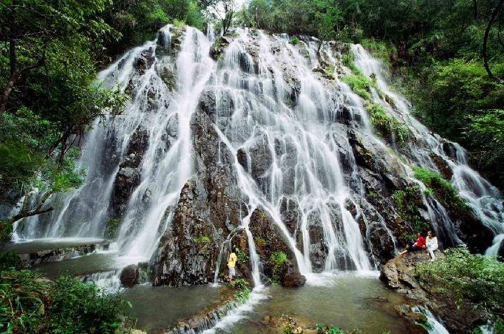

玉龙谷
国家3A级旅游景区
开放时间：8:00-22:00
景点介绍
玉龙谷景区，位于武夷山景区和保护区之间，距度假区约15公里，景区经营面积930公顷，其中核心区面积858公顷，水源丰厚，瀑布成群，有玉龙瀑珠瀑、思乡瀑，景区全长约1.5公里。

有“银的世界，爱的天堂”之称的玉龙谷景区，位于武夷山景区和保护区之间，距度假区约15公里，景区经营面积、珍930公顷，其中核心区面积858公顷，水源丰厚，瀑布成群，有玉龙瀑珠瀑、思乡瀑，景区全长约1.5公里。由一条常年流水不断的瀑布群落，大量的原始次森林景观，600多年前的明代遗留的古银矿洞和畲族村寨塘角构成的集山水景区、古文化景观和民俗风情文化景观于一体的综合性旅游景区。